OIL COOLER > INSTALLATION |
| 1. INSTALL OIL COOLER ASSEMBLY (w/ Off Road Package) |
Install the 2 oil cooler brackets with the 2 bolts.
| 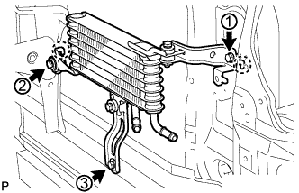 |
Attach the claws of the oil cooler to the hole of the radiator support and the center brace in that order to install the oil cooler.
Install the 3 bolts and tighten the bolts in the order shown in the illustration.
| 2. INSTALL NO. 3 OIL COOLER TUBE SUB-ASSEMBLY (w/ Off Road Package) |
Pass the No. 3 oil cooler tube through the hole of the radiator support from the rear of the vehicle and install it to the oil cooler bracket with the bolt.
| 3. INSTALL NO. 5 OIL COOLER INLET HOSE AND NO. 5 OIL COOLER OUTLET HOSE (w/ Off Road Package) |
| 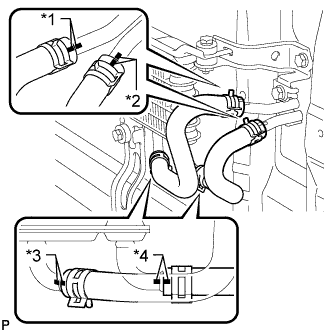 |
Connect the No. 5 oil cooler inlet hose and No. 5 oil cooler outlet hose to the oil cooler.
| *1 | Blue Paint Mark |
| *2 | Pink Paint Mark |
| *3 | Yellow Paint Mark |
| *4 | White Paint Mark |
Connect the 2 hoses to the No. 3 oil cooler tube to install them.
| 4. INSTALL NO. 2 OIL COOLER TUBE SUB-ASSEMBLY |
| 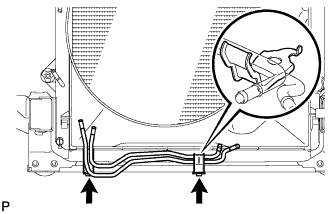 |
Install the No. 2 oil cooler tube with the 2 bolts.
| 5. INSTALL NO. 6 OIL COOLER OUTLET HOSE (w/ Off Road Package) |
| 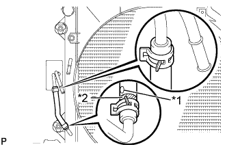 |
Connect the No. 6 oil cooler outlet hose to the radiator and No. 3 oil cooler tube to install it.
| *1 | Yellow Paint Mark |
| *2 | White Paint Mark |
| 6. INSTALL NO. 4 OIL COOLER INLET HOSE AND NO. 4 OIL COOLER OUTLET HOSE (w/ Off Road Package) |
Connect the No. 4 oil cooler inlet hose and No. 4 oil cooler outlet hose to the No. 2 oil cooler tube.
| 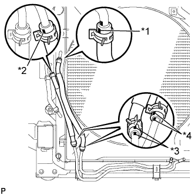 |
Connect the 2 hoses to the radiator and No. 3 oil cooler tube to install them.
| *1 | Yellow Paint Mark |
| *2 | White Paint Mark |
| *3 | Pink Paint Mark |
| *4 | Blue Paint Mark |
| 7. INSTALL OIL COOLER ACCESSORY ASSEMBLY |
Connect the 2 hoses to the No. 2 oil cooler tube.
| 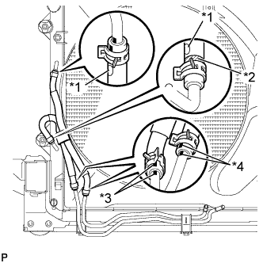 |
Connect the 2 hoses to the radiator to install the oil cooler accessory.
| *1 | Yellow Paint Mark |
| *2 | White Paint Mark |
| *3 | Pink Paint Mark |
| *4 | Blue Paint Mark |
| 8. INSTALL NO. 1 OIL COOLER INLET TUBE AND NO. 1 OIL COOLER OUTLET TUBE |
| 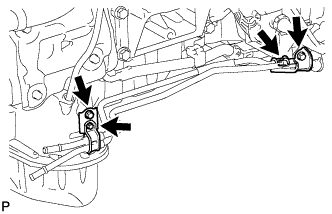 |
Install the 2 No. 2 flexible hose clamps with the 2 bolts.
Install the No. 1 oil cooler inlet tube and No. 1 oil cooler outlet tube and close the 2 No. 2 flexible hose clamps with the 2 bolts.
| 9. INSTALL NO. 3 OIL COOLER INLET HOSE AND NO. 3 OIL COOLER OUTLET HOSE |
| 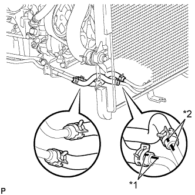 |
Connect the No. 3 oil cooler inlet hose and No. 3 oil cooler outlet hose to the No. 1 oil cooler inlet tube and No. 1 oil cooler outlet tube.
| *1 | Blue Paint Mark |
| *2 | Pink Paint Mark |
Connect the 2 hoses to the No. 2 oil cooler tube to install them, and then pass the 2 hoses through the No. 1 flexible hose clamp and close the clamp.
| 10. INSTALL TRANSMISSION OIL COOLER ASSEMBLY |
| 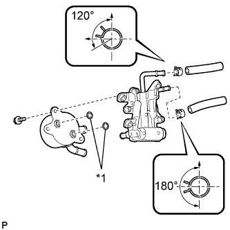 |
Coat 2 new O-rings with ATF and install the O-rings to the grooves of the transmission oil cooler.
| *1 | New O-Ring |
Align the transmission oil cooler with the transmission oil thermostat and assemble them with the 3 bolts.
Connect the No. 1 oil cooler inlet hose and No. 1 oil cooler outlet hose to the transmission oil thermostat.
Connect the 2 hoses to the oil cooler tube unions.
| 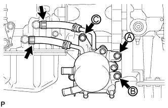 |
Temporarily install the transmission oil cooler together with the transmission oil thermostat with bolt A. Install bolts B and C and tighten them to the specified torque. Then tighten bolt A to the specified torque.
| 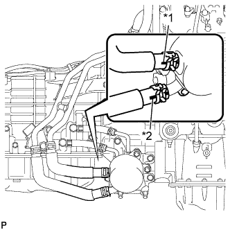 |
Connect the 2 water by-pass hoses to the transmission oil cooler.
| *1 | White Paint Mark |
| *2 | Blue Paint Mark |
| 11. INSTALL NO. 2 OIL COOLER INLET HOSE AND NO. 2 OIL COOLER OUTLET HOSE |
| 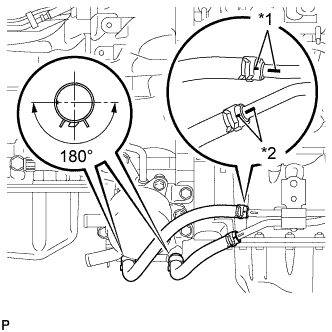 |
Connect the No. 2 oil cooler inlet hose and No. 2 oil cooler outlet hose to the transmission oil thermostat.
| *1 | Blue Paint Mark |
| *2 | Pink Paint Mark |
Connect the 2 hoses to the No. 1 oil cooler inlet tube and No. 1 oil cooler outlet tube to install them.
| 12. INSTALL FRONT EXHAUST PIPE ASSEMBLY |
| 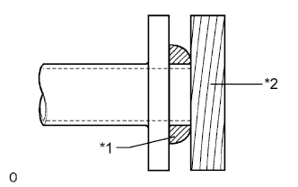 |
Using a plastic-faced hammer and wooden block, tap in a new gasket until its surface is flush with the front exhaust pipe.
| *1 | Gasket |
| *2 | Wooden Block |
Install a new gasket and the front exhaust pipe to the exhaust manifold RH with 2 new nuts.
| 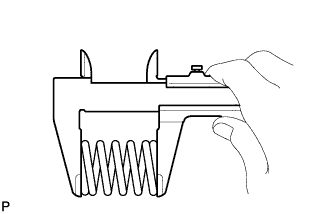 |
Using a vernier caliper, measure the free length of the compression spring.
Connect the front exhaust pipe to the center exhaust pipe with the 2 compression springs and 2 bolts.
Connect the heated oxygen sensor connector.
| 13. ADD ENGINE COOLANT |
Add engine coolant.
Slowly pour coolant into the radiator reservoir until it reaches the F line.
Install the reservoir cap.
Install the radiator cap.*1
Start the engine and stop it immediately.*2
Allow approximately 10 seconds to pass. Then remove the radiator cap and check the coolant level. If the coolant level has decreased, add coolant.*3
Repeat steps *1, *2 and *3 until the coolant level does not decrease.
Install the radiator cap.*4
Set the air conditioning as follows.*5
| Item | Condition |
| Fan speed | Any setting except off |
| Temperature | Toward WARM |
| Air conditioning switch | Off |
Start the engine, warm it up until the thermostat opens, and then continue to run the engine for several minutes to circulate the coolant.*6
Stop the engine and wait until the engine coolant cools down to ambient temperature. Then remove the radiator cap and check the coolant level.*7
If the coolant level has decreased, add coolant and warm up the engine until the thermostat opens.*8
If the coolant level has not decreased, check that the coolant level in the radiator reservoir is at the F line.
If the coolant level is below the F line, repeat steps *4 through *8.
If the coolant level is above the F line, drain coolant until the coolant level reaches the F line.
| 14. ADJUST AUTOMATIC TRANSMISSION FLUID LEVEL |
Adjust the automatic transmission fluid level (Click here).
| 15. INSPECT FOR COOLANT LEAK |
Fill the radiator with coolant and attach a radiator cap tester.
Warm up the engine.
Using the radiator cap tester, increase the pressure inside the radiator to 118 kPa (1.2 kgf/cm2, 17 psi), and check that the pressure does not drop.
If the pressure drops, check the hoses, radiator and water pump for leaks. If no external leaks are found, check the heater core, cylinder block and head.
| 16. INSTALL FRONT BUMPER COVER (w/ Off Road Package) |
Install the front bumper cover (Click here).
| 17. INSTALL FRONT NO. 1 FENDER APRON TO FRAME SEAL RH |
Install the front No. 1 fender apron to frame seal RH with the 5 clips.
| 18. INSTALL FRONT FENDER APRON SEAL RH |
Install the front fender apron seal RH with the 4 clips.
| 19. INSTALL NO. 1 ENGINE UNDER COVER SUB-ASSEMBLY |
 |
Hook the No. 1 engine under cover to the vehicle body as shown in the illustration.
Install the 4 bolts.
| 20. INSTALL REAR ENGINE UNDER COVER ASSEMBLY |
Install the rear engine under cover with the 4 bolts.